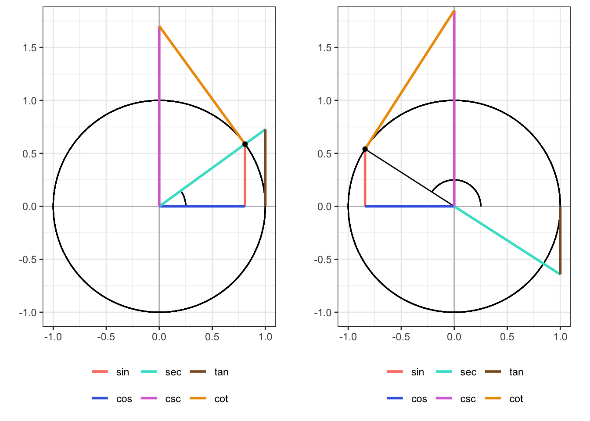

F.1 Степени, корни, логарифмы
F.1.1 Определения
\[ a^n \overset{\text{def}}{=} \prod_{i=1}^n a, \, a \in \mathbb{R}, \, n \in \mathbb{N}^{\star} \tag{F.1}\]
\[ a^{-n} \overset{\text{def}}{=} \frac{1}{a^n}, \, a \neq 0 \tag{F.2}\]
\[ \sqrt[n]a \overset{\text{def}}{=} b \Leftrightarrow b^n = a, \, n \in \mathbb{N}^{\star} \tag{F.3}\]
\[ \log_{a}n \overset{\text{def}}{=} b \Leftrightarrow a^n = b, \, a > 0, \, a \neq 1, \, n > 0 \tag{F.4}\]
\[ a^{\frac{1}{n}} \overset{\text{def}}{=} \sqrt[n]{a} \tag{F.5}\]
\[ a^{\frac{p}{q}} \overset{\text{def}}{=} \sqrt[q]{a^p} \tag{F.6}\]
\[ a^0 \overset{\text{def}}{=} 1 \tag{F.7}\]
F.1.2 Свойства
\[a^n \cdot a^m = a^{n+m} \tag{F.8}\] \[\frac{a^n}{a^m} = a^{n-m} \tag{F.9}\] \[(a^n)^m = a^{nm} \tag{F.10}\] \[(a \cdot b)^n = a^n \cdot b^n \tag{F.11}\] \[\left(\frac{a}{b}\right)^n = \frac{a^n}{b^n} \tag{F.12}\]
\[\sqrt[n]{a \cdot b} = \sqrt[n]{a} \cdot \sqrt[n]{b} \tag{F.13}\] \[(a \cdot b)^{\frac{1}{n}} = a^{\frac{1}{n}} \cdot b^{\frac{1}{n}} \tag{F.14}\] \[\sqrt[n]{\frac{a}{b}} = \frac{\sqrt[n]{a}}{\sqrt[n]{b}} \tag{F.15}\] \[\Big(\frac{a}{b}\Big)^{\frac{1}{n}} = \frac{a^{\frac{1}{n}}}{b^{\frac{1}{n}}} = \frac{b^n}{a^n} \tag{F.16}\]
\[ x^n = a \Rightarrow x = \begin{cases} \pm \sqrt[n]{a}, &\quad x \mod 2 = 0 \\ \sqrt[n]{a}, &\quad x \mod 2 = 1 \end{cases} \]
\[\log_a a = 1 \tag{F.17}\] \[\log_c(ab) = \log_c a + \log_c b \tag{F.18}\] \[\log_c\Big(\frac{a}{b}\Big) = \log_c a - \log_c b \tag{F.19}\]
\[\log_c 1 = 0 \tag{F.20}\] \[\log_c a^b = b \log_c a \tag{F.21}\] \[\log_{c^b} a = \frac{1}{b} \log_c a \tag{F.22}\]
F.2 Модуль
\[ \forall a \in \mathbb{R}\quad |a| \overset{\text{def}}{=} \begin{cases} a, &a \geqslant 0 \\ -a, &a < 0 \end{cases} \tag{F.23}\]
\[ |x| \leqslant a \Rightarrow -a \leqslant x \leqslant a \Leftrightarrow x \in [-a, a] \tag{F.24}\]
\[ |x| \geqslant a \Rightarrow x \leqslant-a \vee x \geqslant a \Leftrightarrow x \in (-\infty, -a] \cup [a, +\infty) \tag{F.25}\]
F.3 Предел
F.3.1 Определение
\[ \lim x_n = a \overset{\text{def}}{\Leftrightarrow} \forall \varepsilon> 0 \; \exists N(\varepsilon) : \forall n > N(\varepsilon) \; |x_n - a| < \varepsilon \tag{F.26}\]
F.3.2 Свойства
Если существуют \(\lim x_n\) и \(\lim y_n\), то
\[ \lim c = c, \, c = \text{const} \tag{F.27}\]
\[ \lim (cx_n) = c \lim x_n, \, c = \text{const} \tag{F.28}\]
\[ \lim (x_n + y_n) = \lim x_n + \lim y_n \tag{F.29}\]
\[ \lim (x_n y_n) = \lim x_n \lim y_n \tag{F.30}\]
\[ \lim \left( \frac{x_n}{y_n} \right) = \frac{\lim x_n}{\lim y_n}, \lim y_n \neq 0 \tag{F.31}\]
\[ \forall n \, a_n > x_n > b_n \wedge \lim a_n = \lim b_n \Rightarrow \lim x_n = \lim a_n = \lim b_n \tag{F.32}\]
F.4 Производная
F.4.1 Определение
\[ f'(x) \overset{\text{def}}{=} \lim_{\Delta x \to 0} \frac{\Delta f(x)}{\Delta x} = \lim_{\Delta x \to 0} \frac{f(x + \Delta x)}{\Delta x} \tag{F.33}\]
F.4.2 Свойства производной
\[ c' = 0, \, c = \text{const} \tag{F.34}\]
\[ (cu)' = cu', \, c = \text{const} \tag{F.35}\]
\[ \big( f(x) + g(x) \big)' = f'(x) + g(x)' \tag{F.36}\]
\[ \big( f(x) g(x) \big)' = f'(x) g(x) + f(x) g(x)' \tag{F.37}\]
\[ \left( \frac{f(x)}{g(x)} \right)' = \frac{f'(x) g(x) - f(x) g'(x)}{g^2(x)}, \, g(x) \not \equiv 0 \tag{F.38}\]
\[ \left( \frac{c}{g(x)} \right)' = - \frac{cg'(x)}{g^2(x)}, \, c = \text{const}, \, g(x) \not \equiv 0 \tag{F.39}\]
\[ \Big( f \big( g(x) \big) \Big)' = f'(g) \cdot g'(x) \tag{F.40}\]
F.4.3 Производные элементарных функций
\[ (x^n)' = nx^{n-1} \tag{F.41}\]
\[ (a^x)' = a^x \ln a \tag{F.42}\]
\[ (e^x)' = e^x \tag{F.43}\]
\[ (\log_a x)' = \frac{1}{x \ln a} \tag{F.44}\]
\[ (\ln x)' = \frac{1}{x} \tag{F.45}\]
\[ (\sqrt{x})' = \frac{1}{2\sqrt{x}} \tag{F.46}\]
\[ (\sin x)' = \cos x \tag{F.47}\]
\[ (\cos x)' = -\sin x \tag{F.48}\]
\[ (\tan x)' = \frac{1}{\cos^2 x} \tag{F.49}\]
\[ (\cot x)' = -\frac{1}{\sin^2 x} \tag{F.50}\]
\[ (\sec x)' = \frac{\sin x}{\cos^2 x} \tag{F.51}\]
\[ (\csc x)' = -\frac{\cos x}{\sin^2 x} \tag{F.52}\]
\[ (\arcsin x)' = \frac{1}{\sqrt{1 - x^2}} \tag{F.53}\]
\[ (\arccos x)' = -\frac{1}{\sqrt{1 - x^2}} \tag{F.54}\]
\[ (\arctan x)' = \frac{1}{1 + x^2} \tag{F.55}\]
\[ (\mathop{\mathrm{arccot}}x)' = -\frac{1}{1 + x^2} \tag{F.56}\]
\[ (\mathop{\mathrm{arcsec}}x)' = \frac{1}{|x|\sqrt{x^2 - 1}} \tag{F.57}\]
\[ (\mathop{\mathrm{arccsc}}x)' = -\frac{1}{|x|\sqrt{x^2 - 1}} \tag{F.58}\]
\[ (\sinh x)' = \cosh x \tag{F.59}\]
\[ (\cosh x)' = \sinh x \tag{F.60}\]
\[ (\tanh x)' = \frac{1}{\cosh^2 x} \tag{F.61}\]
\[ (\coth x)' = -\frac{1}{\sinh^2 x} \tag{F.62}\]
\[ (\mathop{\mathrm{sech}}x)' = -\frac{\sinh x}{\cosh^2 x} \tag{F.63}\]
\[ (\mathop{\mathrm{csch}}x)' = -\frac{\cosh x}{\sinh^2 x} \tag{F.64}\]
\[ (\mathop{\mathrm{arsinh}})' = \frac{1}{\sqrt{x^2 + 1}} \tag{F.65}\]
\[ (\mathop{\mathrm{arcoth}})' = \frac{1}{\sqrt{x^2 - 1}} \tag{F.66}\]
\[ (\mathop{\mathrm{artanh}})' = \frac{1}{1 - x^2} \tag{F.67}\]
\[ (\mathop{\mathrm{arcoth}})' = \frac{1}{1 - x^2} \tag{F.68}\]
\[ (\mathop{\mathrm{arsech}})' = -\frac{1}{x(x+1)\sqrt{\dfrac{1 - x}{1 + x}}} \tag{F.69}\]
\[ (\mathop{\mathrm{arcsch}})' = -\frac{1}{x^2\sqrt{1 + \dfrac{1}{x^2}}} \tag{F.70}\]
F.5 Тригонометрия
F.5.1 Базовые соотношения
\[ \sec \alpha = \frac{1}{\cos \alpha} \tag{F.71}\]
\[ \csc \alpha = \frac{1}{\sin \alpha} \tag{F.72}\]
\[ \tan \alpha = \frac{\sin \alpha}{\cos \alpha} = \frac{1}{\cot \alpha} \tag{F.73}\]
\[ \cot \alpha = \frac{\cos \alpha}{\sin \alpha} = \frac{1}{\tan \alpha} \tag{F.74}\]
\[ \frac{\sec \alpha}{\csc \alpha} = \tan \alpha \tag{F.75}\]
\[ \frac{\csc \alpha}{\sec \alpha} = \cot \alpha \tag{F.76}\]
\[ \frac{\tan \alpha}{\cot \alpha} = 1 \tag{F.77}\]
\[ \tan \alpha \cot \alpha = 1 \tag{F.78}\]
F.5.2 Основное тригонометрическое тождество
\[ \sin^2 \alpha + \cos^2 \alpha = 1 \tag{F.79}\]
\[ \sin \alpha = \pm \sqrt{1 - \cos^2 \alpha} \tag{F.80}\]
\[ \cos \alpha = \pm \sqrt{1 - \sin^2 \alpha} \tag{F.81}\]
\[ 1 + \cot^2 \alpha = \csc^2 \alpha \tag{F.82}\]
\[ \tan^2 \alpha + 1 = \sec ^2 \alpha \tag{F.83}\]
\[ \sec^2 \alpha + \csc^2 \alpha = \sec^2 \alpha \cdot \csc^2 \alpha \tag{F.84}\]
F.5.3 Отражения

F.5.3.1 Относительно \(\varphi = 0\)
Выражает свойство чётности функции1.
\[\sin (-\alpha) = -\sin \alpha \tag{F.85}\] \[\tan (-\alpha) = -\tan \alpha \tag{F.86}\] \[\sec (-\alpha) = \sec \alpha \tag{F.87}\]
\[\cos (-\alpha) = \cos \alpha \tag{F.88}\] \[\cot (-\alpha) = -\cot \alpha \tag{F.89}\] \[\csc (-\alpha) = -\csc \alpha \tag{F.90}\]
F.5.3.2 Относительно \(\varphi = \frac{\pi}{4}\)
\[\sin (\frac{\pi}{2}-\alpha) = \cos \alpha \tag{F.91}\] \[\tan \Big(\frac{\pi}{2}-\alpha\Big) = \cot \alpha \tag{F.92}\] \[\sec \Big(\frac{\pi}{2}-\alpha\Big) = \csc \alpha \tag{F.93}\]
\[\cos \Big(\frac{\pi}{2}-\alpha\Big) = \sin \alpha \tag{F.94}\] \[\cot \Big(\frac{\pi}{2}-\alpha\Big) = \tan \alpha \tag{F.95}\] \[\csc \Big(\frac{\pi}{2}-\alpha\Big) = \sec \alpha \tag{F.96}\]
F.5.3.3 Относительно \(\varphi = \frac{\pi}{2}\)
\[\sin (\pi-\alpha) = \sin \alpha \tag{F.97}\] \[\tan (\pi-\alpha) = -\tan \alpha \tag{F.98}\] \[\sec (\pi-\alpha) = -\sec \alpha \tag{F.99}\]
\[\cos (\pi-\alpha) = -\cos \alpha \tag{F.100}\] \[\cot (\pi-\alpha) = -\cot \alpha \tag{F.101}\] \[\csc (\pi-\alpha) = \csc \alpha \tag{F.102}\]
F.5.3.4 Относительно \(\varphi = \frac{3\pi}{4}\)
\[\sin \Big(\frac{3\pi}{2}-\alpha\Big) = -\cos \alpha \tag{F.103}\] \[\tan \Big(\frac{3\pi}{2}-\alpha\Big) = \cot \alpha \tag{F.104}\] \[\sec \Big(\frac{3\pi}{2}-\alpha\Big) = -\csc \alpha \tag{F.105}\]
\[\cos \Big(\frac{3\pi}{2}-\alpha\Big) = -\sin \alpha \tag{F.106}\] \[\cot \Big(\frac{3\pi}{2}-\alpha\Big) = \tan \alpha \tag{F.107}\] \[\csc \Big(\frac{3\pi}{2}-\alpha\Big) = -\sec \alpha \tag{F.108}\]
F.5.3.5 Относительно \(\varphi = \pi\)
\[\sin (2\pi - \alpha) = -\sin \alpha = \sin (-\alpha) \tag{F.109}\] \[\tan (2\pi - \alpha) = -\tan \alpha = \tan (-\alpha) \tag{F.110}\] \[\sec (2\pi - \alpha) = \sec \alpha = \sec (-\alpha) \tag{F.111}\] \[\cos (2\pi - \alpha) = \cos \alpha = \cos (-\alpha) \tag{F.112}\] \[\cot (2\pi - \alpha) = -\cot \alpha = \cot (-\alpha) \tag{F.113}\] \[\csc (2\pi - \alpha) = -\csc \alpha = \csc (-\alpha) \tag{F.114}\]
F.5.4 Сдвиг
Так как все тригонометрические функции периодические, результат сдвига функции определяется её периодом. Для функций \(\sin, \cos, \sec\) и \(\csc\) период равен \(2\pi\). Для \(\tan\) и \(\cot\) он составляет \(\pi\).
F.5.4.1 На четверть периода
\[\sin \Big(\alpha \pm \frac{\pi}{2}\Big) = \pm\cos \alpha \tag{F.115}\] \[\tan \Big(\alpha \pm \frac{\pi}{4}\Big) = \frac{\tan \alpha \pm 1}{1 \mp \tan \alpha} \tag{F.116}\] \[\sec \Big(\alpha \pm \frac{\pi}{2}\Big) = \mp \csc \alpha \tag{F.117}\]
\[\cos \Big(\alpha \pm \frac{\pi}{2}\Big) = \mp \sin \alpha \tag{F.118}\] \[\cot \Big(\alpha \pm \frac{\pi}{4}\Big) = \frac{\cot \alpha \mp 1}{1 \pm \cot \alpha} \tag{F.119}\] \[\csc \Big(\alpha \pm \frac{\pi}{2}\Big) = \pm \sec \alpha \tag{F.120}\]
F.5.4.2 На половину периода
\[\sin (\alpha + \pi) = -\sin \alpha \tag{F.121}\] \[\tan \Big(\alpha + \frac{\pi}{2}\Big) = -\cot \alpha \tag{F.122}\] \[\sec (\alpha + \pi) = -\sec \alpha \tag{F.123}\]
\[\cos (\alpha + \pi) = -\cos \alpha \tag{F.124}\] \[\cot \Big(\alpha + \frac{\pi}{2}\Big) = -\tan \alpha \tag{F.125}\] \[\csc (\alpha + \pi) = -\csc \alpha \tag{F.126}\]
F.5.4.3 На полный период
\[\sin (\alpha + 2\pi) = \sin \alpha \tag{F.127}\] \[\tan (\alpha + \pi) = \tan \alpha \tag{F.128}\] \[\sec (\alpha + 2\pi) = \sec \alpha \tag{F.129}\]
\[\cos (\alpha + 2\pi) = \cos \alpha \tag{F.130}\] \[\cot (\alpha + \pi) = \cot \alpha \tag{F.131}\] \[\csc (\alpha + 2\pi) = \csc \alpha \tag{F.132}\]
F.5.5 Соотношение знаков
\[ \mathop{\mathrm{sgn}}x \overset{\text{def}}{=} \cases{ 1, \, x > 0 \\ 0, \, x = 0 \\ -1, \, x < 0 } \tag{F.133}\]
\[ \mathop{\mathrm{sgn}}\sin \alpha = \mathop{\mathrm{sgn}}\csc \alpha \tag{F.134}\]
\[ \mathop{\mathrm{sgn}}\cos \alpha = \mathop{\mathrm{sgn}}\sec \alpha \tag{F.135}\]
\[ \mathop{\mathrm{sgn}}\tan \alpha = \mathop{\mathrm{sgn}}\cot \alpha \tag{F.136}\]
F.5.6 Функции суммы и разности аргументов
\[ \sin (\alpha \pm \beta) = \sin \alpha \cos \beta \pm \cos \alpha \sin \beta \tag{F.137}\]
\[ \cos (\alpha \pm \beta) = \cos \alpha \cos \beta \mp \sin \alpha \sin \beta \tag{F.138}\]
\[ \tan (\alpha \pm \beta) = \frac{\tan \alpha \pm \tan \beta}{1 \mp \tan \alpha \tan \beta} \tag{F.139}\]
\[ \cot (\alpha \pm \beta) = \frac{\cot \alpha \cot \beta \mp 1}{\cot \beta \pm \cot \alpha} \tag{F.140}\]
\[ \sec (\alpha \pm \beta) = \frac{\sec \alpha \sec \beta \csc \alpha \csc \beta}{\csc \alpha \csc \beta \mp \sec \alpha \sec \beta} \tag{F.141}\]
\[ \csc (\alpha \pm \beta) = \frac{\sec \alpha \sec \beta \csc \alpha \csc \beta}{\sec \alpha \csc \beta \pm \sec \alpha \sec \beta} \tag{F.142}\]
F.5.7 Формулы двойного аргумента
\[ \sin 2\alpha = 2\sin \alpha \cos \alpha = (\sin \alpha + \cos \alpha)^2 -1 = \frac{2\tan \alpha}{1 + \tan^2 \alpha} \tag{F.143}\]
\[ \cos 2\alpha = \cos^2 \alpha - \sin^2 \alpha = 2\cos^2 \alpha - 1 = 1 - 2\sin^2 \alpha = \frac{1 - \tan^2 \alpha}{1 + \tan^2 \alpha} \tag{F.144}\]
\[ \tan 2\alpha = \frac{2\tan \alpha}{1 - \tan^2 \alpha} \tag{F.145}\]
\[ \cot 2\alpha = \frac{\cot^2 \alpha - 1}{2 \cot \alpha} = \frac{1 - \tan^2 \alpha}{2 \tan \alpha} \tag{F.146}\]
\[ \sec 2\alpha = \frac{\sec^2 \alpha}{2 - \sec^2 \alpha} = \frac{1 + \tan^2 \alpha}{1 - \tan^2 \alpha} \tag{F.147}\]
\[ \csc 2\alpha = \frac{\sec \alpha \csc \alpha}{2} = \frac{1 + \tan^2 \alpha}{2 \tan \alpha} \tag{F.148}\]
F.5.8 Формулы тройного аргумента
\[ \sin 3\alpha = 3\sin \alpha - 4 \sin^3 \alpha = 4\sin \alpha \sin \Big( \frac{\pi}{3} - \alpha\Big) \sin \Big( \frac{\pi}{3} + \alpha \Big) \tag{F.149}\]
\[ \cos 3\alpha = 4\cos^3 \alpha - 3 \cos \alpha = 4\cos \alpha \cos \Big(\frac{\pi}{3} - \alpha\Big) \cos \Big(\frac{\pi}{3} + \alpha\Big) \tag{F.150}\]
\[ \tan 3\alpha = \frac{3\tan \alpha - \tan^3 \alpha}{1 - 3\tan^2 \alpha} = \tan \alpha \tan \Big( \frac{\pi}{3} - \alpha \Big) \tan \Big(\frac{\pi}{3} + \alpha \Big) \tag{F.151}\]
\[ \cot 3\alpha = \frac{3 \cot \alpha - \cot^3 \alpha}{1 - 3\cot^2 \alpha} \tag{F.152}\]
\[ \sec 3\alpha = \frac{\sec^3 \alpha}{4 - 3\sec^2 \alpha} \tag{F.153}\]
\[ \csc 3\alpha = \frac{\csc^3 \alpha}{3\csc^2 \alpha -4} \tag{F.154}\]
F.5.9 Формулы половинного аргумента
\[ \sin \frac{\alpha}{2} = \mathop{\mathrm{sgn}}\Big(\sin \frac{\alpha}{2} \Big) \sqrt{\frac{1 - \cos \alpha}{2}} \tag{F.155}\]
\[ \cos \frac{\alpha}{2} = \mathop{\mathrm{sgn}}\Big( \cos \frac{\alpha}{2} \Big) \sqrt{\frac{1 + \cos \alpha}{2}} \tag{F.156}\]
\[ \tan \frac{\alpha}{2} = \frac{1 - \cos\alpha}{\sin \alpha} = \frac{\sin \alpha}{1 + \cos \alpha} = \csc \alpha - \cot \alpha = \frac{\tan \alpha}{1 + \sec \alpha} = \mathop{\mathrm{sgn}}(\sin \alpha) \sqrt{\frac{1 - \cos \alpha}{1 + \cos \alpha}} \tag{F.157}\]
\[ \cot \frac{\alpha}{2} = \frac{1 + \cos \alpha}{\sin \alpha} = \frac{\sin \alpha}{1 - \cos \alpha} = \csc \alpha + \cot \alpha = \mathop{\mathrm{sgn}}(\sin \alpha) \sqrt{\frac{1 + \cos \alpha}{1 - \cos{\alpha}}} \tag{F.158}\]
\[ \sec \frac{\alpha}{2} = \mathop{\mathrm{sgn}}\Big( \cos \frac{\alpha}{2} \Big) \sqrt{\frac{2}{1 + \cos \alpha}} \tag{F.159}\]
\[ \csc \frac{\alpha}{2} = \mathop{\mathrm{sgn}}\Big( \sin \frac{\alpha}{2} \Big) \sqrt{\frac{2}{1 - \cos \alpha}} \tag{F.160}\]
F.5.10 Формулы понижения степени
\[ \sin^2 \alpha = \frac{1 - \cos 2\alpha}{2} \tag{F.161}\] \[ \tan^2 \alpha = \frac{1 - \cos 2\alpha}{1 + \cos 2\alpha} \tag{F.162}\] \[ \sec^2 \alpha = \frac{2}{1 + \cos 2\alpha} \tag{F.163}\]
\[ \cos^2 \alpha = \frac{1 + \cos 2\alpha}{2} \tag{F.164}\] \[ \cot^2 \alpha = \frac{1 + \cos 2\alpha}{1 - \cos 2\alpha} \tag{F.165}\] \[ \csc^2 \alpha = \frac{2}{1 - \cos 2\alpha} \tag{F.166}\]
F.5.11 Преобразование произведения в сумму
\[ \cos \alpha \cos \beta = \frac{\cos (\alpha - \beta) + \cos (\alpha + \beta)}{2} \tag{F.167}\]
\[ \sin \alpha \sin \beta = \frac{\cos (\alpha - \beta) - \cos (\alpha + \beta)}{2} \tag{F.168}\]
\[ \sin \alpha \cos \beta = \frac{\sin (\alpha + \beta) + \sin (\alpha - \beta)}{2} \tag{F.169}\]
\[ \cos \alpha \sin \beta = \frac{\sin (\alpha + \beta) - \sin (\alpha - \beta)}{2} \tag{F.170}\]
\[ \tan \alpha \tan \beta = \frac{\cos (\alpha - \beta) - \cos (\alpha + \beta)}{\cos (\alpha - \beta) + \cos (\alpha + \beta)} = \frac{\tan \alpha + \tan \beta}{\cot \alpha + \cot \beta} = - \frac{\tan \alpha - \tan \beta}{\cot \alpha - \cot \beta} \tag{F.171}\]
\[ \cot \alpha \cot \beta = \frac{\cos (\alpha - \beta) + \cos (\alpha + \beta)}{\cos (\alpha - \beta) - \cos (\alpha + \beta)} = \frac{\cot \alpha + \cot \beta}{\tan \alpha + \tan \beta} = - \frac{\cot \alpha - \cot \beta}{\tan \alpha - \tan \beta} \tag{F.172}\]
\[ \tan \alpha \cot \beta = \frac{\sin (\alpha + \beta) + \sin (\alpha - \beta)}{\sin (\alpha + \beta) - \sin (\alpha - \beta)} = \frac{\tan \alpha + \cot \beta}{\cot \alpha + \tan \beta} = - \frac{\tan \alpha - \cot \beta}{\cot \alpha - \tan \beta} \tag{F.173}\]
F.5.12 Преобразование суммы в произведение
\[ \sin \alpha \pm \sin \beta = 2 \sin \Big(\frac{\alpha \pm \beta}{2}\Big) \cos \Big(\frac{\alpha \mp \beta}{2}\Big) \tag{F.174}\]
\[ \cos \alpha + \cos \beta = 2 \cos \Big(\frac{\alpha + \beta}{2}\Big) \cos \Big(\frac{\alpha - \beta}{2}\Big) \tag{F.175}\]
\[ \cos \alpha - \cos \beta = -2 \sin \Big(\frac{\alpha + \beta}{2}\Big) \sin \Big(\frac{\alpha - \beta}{2}\Big) \tag{F.176}\]
\[ \tan \alpha \pm \tan \beta = \frac{\sin(\alpha + \beta)}{\cos \alpha \cos \beta} \tag{F.177}\]
F.6 Гиперболические функции
\[ \sinh x = \frac{e^x - e^{-x}}{2} \tag{F.178}\]
\[ \cosh x = \frac{e^x + e^{-x}}{2} \tag{F.179}\]
\[ \tanh x = \frac{\sinh x}{\cosh x} = \frac{e^x - e^{-x}}{e^x + e^{-x}} = \frac{e^{2x} - 1}{e^{2x} + 1} \tag{F.180}\]
\[ \coth x = \frac{\cosh x}{\sinh x} = \frac{e^x + e^{-x}}{e^x - e^{-x}} = \frac{e^{2x} + 1}{e^{2x} - 1} \tag{F.181}\]
\[ \mathop{\mathrm{sech}}x = \frac{1}{\cosh x} = \frac{2}{e^x + e^{-x}} \tag{F.182}\]
\[ \mathop{\mathrm{csch}}x = \frac{1}{\sinh x} = \frac{2}{e^x - e^{-x}} \tag{F.183}\]
\[ \mathop{\mathrm{arsinh}}x = \ln (x + \sqrt{x^2 + 1}) \tag{F.184}\]
\[ \mathop{\mathrm{arcosh}}x = \ln (x + \sqrt{x^2 - 1}), \, x \geqslant 1 \tag{F.185}\]
\[ \mathop{\mathrm{artanh}}x = \ln \frac{\sqrt{1 - x^2}}{1 - x} = \frac{1}{2} \ln \frac{1 + x}{1 - x}, \, |x| < 1 \tag{F.186}\]
\[ \mathop{\mathrm{arcoth}}x = \ln \frac{\sqrt{x^2 - 1}}{x - 1} = \frac{1}{2} \ln \frac{x + 1}{x - 1}, \, |x| > 1 \tag{F.187}\]
\[ \mathop{\mathrm{arsech}}x = \ln \frac{1 + \sqrt{1 - x^2}}{x}, \, 0 < x \leqslant 1 \tag{F.188}\]
\[ \mathop{\mathrm{arcsch}}x = \ln \frac{1 + \mathop{\mathrm{sgn}}x \sqrt{1 + x^2}}{x}, \, x \neq 0 \tag{F.189}\]
Функция называется чётной, если \(f(-x) = f(x)\), и нечётной, если \(f(-x) = -f(x)\).↩︎